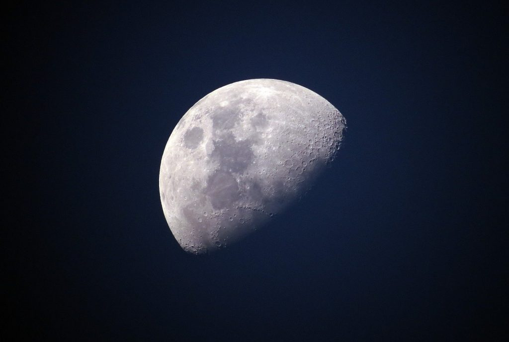

A disciplina de Química, ministrada pela professora Joate no Colégio Estadual Plínio Alves Monteiro Tourinho, tem como objetivo despertar o interesse dos alunos para o estudo das transformações da matéria e suas aplicações no cotidiano. Com uma abordagem prática e dinâmica, as aulas incentivam a compreensão de conceitos fundamentais, como reações químicas, estrutura atômica e ligações químicas, proporcionando aos estudantes uma base sólida para o desenvolvimento de habilidades científicas e pensamento crítico.